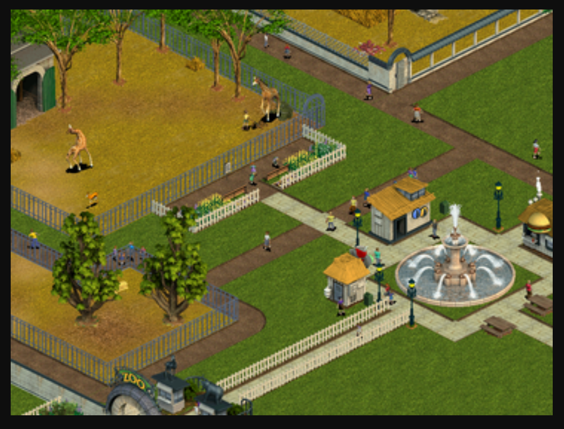

- Developer(s):Blue Fang Games.
- Publisher(s): Microsoft.
- Designer(s): Adam Levesque, Steven Serafino.
- Platform(s): Windows, Macintosh, Nintendo DS.
- Release: October 17, 2001.
- Mode(s): Single-player.
Allows players to build and manage a zoo, including designing exhibits, caring for animals, and ensuring visitor satisfaction.